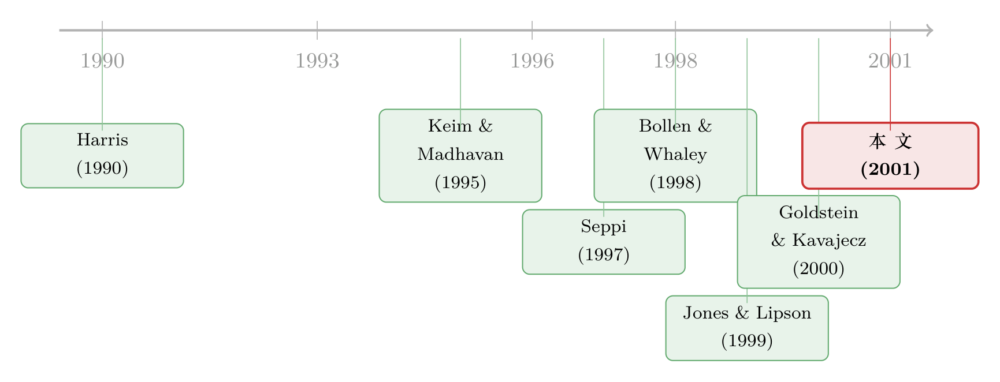

价差变窄了，机构却付得更多——一场关于「最小报价单位」的反转
本文读的是 Jones & Lipson (2001, JFE)：1997 年 6 月 NYSE 把最小报价单位从 1/8 美元降到 1/16 美元，所有人都看到买卖价差变窄了——可作者拿机构的真实成交单一算，机构的已实现执行成本反而上升了约 25%。价差不是市场质量的充分统计量；更小的 tick，可能反而抽走了流动性。
1 引言：一个「皆大欢喜」的政策，为什么有人不高兴
1997 年 6 月 24 日，纽约证券交易所（NYSE）干了一件在当时被普遍叫好的事：把绝大多数股票的最小报价单位（minimum tick size），从沿用已久的 1/8 美元（即 12.5 美分）降到 1/16 美元（6.25 美分）。这被官方定性为走向「十进制报价」（decimalization）的一个过渡步骤。
道理似乎不言而喻：报价的「最小格子」变细了，买价和卖价就能贴得更近，买卖价差（bid-ask spread）自然会收窄。而价差，是教科书里衡量交易成本最经典的尺子。于是几乎所有研究都得到了同一个结论——多伦多交易所降 tick（Bacidore, 1997；Porter and Weaver, 1997；Ahn et al., 1998）、AMEX 改 1/16（Ronen and Weaver, 1998）、NYSE 这次改 1/16（Bollen and Whaley, 1998）——价差和有效价差一律下降。结论顺理成章：交易成本降了，市场质量提高了。
可是，如果故事真这么简单，这篇论文就不必写了。
接着，一个自然的问题是：价差，真的等于交易成本吗？对一个只买 300 股的散户，也许是的——他一笔成交就完事，付的就是那个价差。但对一家要建仓 10 万股的机构呢？
2 张力所在：价差量不到的那部分成本
这里藏着市场微观结构里一个长期被忽视的裂缝。
先看一个早已被人注意到的事实：tick 降低之后，报价深度（quoted depth）也下降了。但作者提醒我们，单看这一点不奇怪。假设做市商原本愿意在 1/8 的价差上挂 10,000 股；改成 1/16 后，他可能只愿意在 1/16 上挂 4,000 股，剩下 6,000 股退到 1/8 的价位去挂。结果是：最优报价处的深度（inside depth）下降了，但固定价差下的累计深度其实没变。所以光看「内盘深度」根本回答不了真正的问题——流动性供给曲线到底有没有整体向内收缩？
Goldstein and Kavajecz (2000) 用 NYSE 的专有系统数据重建了整本限价订单簿，发现降 tick 之后，深度在订单簿的各个层级上全面下降。这暗示交易者整体上更不愿意挂限价单了。可吊诡的是，当他们去算有效价差时，结论却和别人一样：有效价差还是降了。
于是问题变得尖锐：订单簿明明变「薄」了，有效价差为什么还在降？
作者给出了两条线索。第一，限价订单簿测不到全部深度——NYSE 的交易大厅里，专家（specialist）和场内交易员提供了大量不显示在簿子上的流动性（So"anos and Werner, 1997），tick 变小后订单可能只是从「簿子」转移到了「大厅」，总流动性未必变。第二，也是真正关键的一步——有效价差本身就量不准大单的成本。
为什么？因为机构不是一笔成交就了事的。它们往往要靠多笔交易、跨多天才能把一个大仓位「腿进去」（leg into，Keim and Madhavan, 1995；Economides and Schwartz, 1995）。在这个过程中，价格会朝不利方向移动；更糟的是，大单一旦被拿到交易大厅或在「楼上市场」（upstairs market）兜售，还没成交，消息就先泄露出去了（Plexus Group, 1996）。如果价格在买单成交前就被抬高、在卖单成交前就被压低，有效价差——它只比较成交价和成交那一刻的中间价——就会系统性地低估真实的执行成本。
这正是本文方法论上的命门：要量机构的真实成本，你不能从「成交那一刻」起算，你得从机构下定决心要交易的那一刻起算。
3 识别策略：把成本从「决策时点」起算
本文的核心，是它能直接、而非间接地观测机构的执行成本。
数据来自 Plexus Group——一家专门帮机构投资者监控和降低交易成本的咨询公司。它的客户管理着超过 1.5 万亿美元的股票资产，覆盖了美国约 25% 的市场成交量，客户包括 Vanguard、State Street Global、Alliance Capital 这样的巨头。关键在于，Plexus 记录了三样东西：订单被释放给券商交易台的日期和时点、各执行券商报告的成交量加权平均价（VWAP）、以及支付的佣金。
有了这三样，作者定义了两个量：
执行成本（implementation cost），是订单各笔成交的成交量加权平均价，与订单被释放给交易台那一刻所对应的中间价之间的比例差异；总成本（total cost），则等于执行成本加佣金。
这个定义的精妙之处，在于「起算点」选在了订单释放的那一刻，而不是某笔成交的那一刻。于是，当一个订单被拆成多笔、价格随着交易者自己的动作一步步被推高时，这些额外成本统统被算了进去。一个买家分多次买入同一只股票，价格会被自己抬上去，后买的比先买的贵——有效价差对此视而不见，本文的尺子却把它逐分逐厘地记下来。
样本是 1997 年那次改 tick 前后各 100 个交易日里，Plexus 客户在 1,271 只 NYSE 股票上执行的 386,487 笔订单。统计检验假设成本在「公司×日」之间相互独立——这并非随意假设：作者算出，任意两家公司之间执行成本的平均相关系数仅为 0.0007，横截面独立性是个相当合理的近似。
这里还有一个数字值得记住：Plexus 客户的平均订单是 25,129 股，而订单释放时市场上对应一侧的平均报价深度只有 6,125 股——订单是深度的四倍多。改 tick 前，超过报价深度的订单占了 Plexus 客户成交量的 93.94%。换句话说，对这些机构而言，它们的流动性需求几乎永远超过报价深度，报价价差当然不可能是执行成本的充分统计量。
作者也用了 Plexus 在 Nasdaq 股票上的数据做过类似检验，结论相似，但功效弱得多——因为 Nasdaq 当时正赶上 SEC 的新订单处理规则（Barclay et al., 1999），且不强制时间优先，把 tick 的效应和别的改革搅在了一起。关于 tick 与做市机制如何纠缠，可参见《报价，是邀请，还是暗号？——拆开 NYSE 之外那张「成交成本」的账单》。所以全文聚焦于更「干净」的 NYSE 事件。
4 主要结果：价差降了，成本却升了
先看大背景。用 TAQ 数据算，全样本的成交量加权报价价差从改 tick 前的 $0.180 降到之后的 $0.155，按中间价的比例从 0.93% 降到 0.69%，跌幅超过 25%；有效价差同样显著下降。报价深度则从平均 5,995 股掉到 3,808 股，缩水约三分之一；小价差公司缩得最狠，最小价差组的深度从 12,540 股腰斩到 6,851 股，跌了 45%。
到这一步，一切都和别人的研究一致：价差降、深度降。反转出现在 Plexus 的成本数据里。
对这些机构而言，包含佣金的单边总成本，从改 tick 前的 68.2 个基点，升到了之后的 85.4 个基点——上涨了约 25%。这和「价差降了 25%」恰好是反方向的。
更要紧的是，这个上涨在不同订单之间高度不均。把订单按规模切开看，三个特征跃然纸上：
- 小单受益，大单受损。 不足 1,000 股的订单，执行成本从 17.7 基点降到 11.1 基点；1,000 到 9,999 股的中单几乎没变（23.7 → 22.4，不显著）；可一旦到了 10,000 股以上就开始变贵，而至少 100,000 股的大单，执行成本从 71.9 基点飙到 95.8 基点，单是执行成本就贵了约三分之一。
- 越「急」的流动性需求，涨得越多。 动量交易者（momentum traders）作为一个群体，改 tick 后执行成本贵了约三分之一；而那些由单一券商在单一交易日内执行完的订单——这类订单通常意味着机构急于成交、不愿摊到多天或多家券商——成本上涨超过 50%。
- 小价差股票，反差最剧烈。 改 tick 的效应在改之前价差最小的那批股票上最明显。这很合理：这些股票的价差本来就更容易顶到「最小 tick」这个下限。于是在最小价差组里，小单省到了最多的钱，大单却付出了最大的成本增幅。
把这几个事实串起来，画面就清楚了：tick 变小，对那些只在报价价差上成交的小单是好事；但对那些需要「吃掉」远超报价深度的大单、需要主动索取流动性的交易者，是坏事。 而机构，恰恰主要是后者。改 tick 并不是帕累托改进。
5 文献脉络：理论早就预言了，只是数据来得晚
这篇论文的妙处，在于它的实证结论和一支被「价差下降」叙事压住的理论文献严丝合缝地对上了。
早期的市场微观结构研究里，Harris (1990, 1996) 就构造过框架说明：更小的报价单位，会让市场参与者能以更小的代价「插队」到既有限价单前面（step ahead）。Anshuman and Kalay (1998) 与 Seppi (1997) 也给出了类似的均衡——当 tick 变小，抢在别人限价单前面成交变得几乎免费，挂限价单（提供流动性）相对于下市价单（索取流动性）的成本就上升了。理性的交易者于是更不愿意承诺提供流动性，挂单变薄，急单的成本上升。

实证这一侧，则沿着两条线推进。一条是 Keim and Madhavan (1995) 等人用 Plexus 这类机构数据，揭示「交易过程」本身的成本结构——大单是分批腿进去的，价格冲击和信息泄露都是真金白银。本文作者自己更早的工作 Jones and Lipson (1999) 已经在这条线上。另一条是围绕 1997 那次事件的「价差派」研究：Bollen and Whaley (1998) 细致地刻画了 NYSE 价差的下降，并指出对低价股最明显；Goldstein and Kavajecz (2000) 则第一次把订单簿的全面变薄摆上了桌面。
本文的位置，正是这两条线的交汇点：它接过了 Goldstein-Kavajecz「订单簿变薄」的实证线索，又用 Plexus 的机构成本数据补上了最后一块拼图——订单簿变薄不是无关紧要的会计现象，它真的让索取流动性的人多付了钱，从而为 Harris-Seppi 一系的理论提供了直接证据。
6 评论与延伸（Q&A + 研究方向）
(a) 几个可能的疑问
Q：有效价差降了、执行成本却升了，这两个结论矛盾吗？
不矛盾，它们量的是两件事。有效价差只比较成交价与「成交那一刻」的中间价，对小单几乎就是全部成本；而本文的执行成本从「订单释放给交易台」那一刻起算，囊括了大单分批成交时被自己推动的价格、以及成交前的信息泄露。小单两把尺子都说「降了」，大单则在第二把尺子下「升了」——区别全在于大单的成本主要发生在有效价差测不到的地方。
Q：成本上升会不会只是 1997 年那段时间市场恰好变差，而非 tick 造成的？
这是最该担心的混淆。作者的部分防线在于横截面对照：效应在「价差本来就贴近最小 tick」的小价差股票上最强，在大价差股票上几乎没有甚至反向——若是一个笼统的市场冲击，不该如此整齐地沿着「价差是否受 tick 约束」排列。不过这终究不是随机实验，宏观环境的同期变化无法完全排除。
Q：机构成本上升，会不会只是它们的交易行为变了，而非市场质量变了？
两者确实纠缠。作者注意到改 tick 后平均成交规模从 1,855 股降到 1,613 股，可能是大单被拆得更碎。但「拆单」本身可能正是对流动性变薄的理性反应——如果一口气吃不下，就只能切片慢喂，而切片的代价正是被记进执行成本的那部分。所以行为变化与市场质量变化在这里不是替代解释，而更像同一枚硬币的两面。
Q：那 SEC 推十进制报价，是不是错了？
本文没有这么强的结论。它说的是「不是帕累托改进」——小额交易者明确受益，机构明确受损。福利净效应取决于你如何加权这两类参与者，以及更长期里做市行业如何调整。本文捕捉的是紧邻事件的短期反应。
Q：为什么偏偏是「动量交易者」和「单券商单日订单」涨得最多？
因为它们都是急于索取流动性的代表。动量交易者追的是价格趋势，慢了信号就过期；单券商单日完成的订单，本身就暴露了机构不愿把单子摊到多天多家券商去耐心消化。tick 变小让「提供流动性」变得不划算、订单簿变薄，最吃亏的当然是这些等不起的人。
Q：这对今天的公司债、外资持有人研究有什么启发？
核心教训是「价差 ≠ 交易成本」，这在场外、低频、大宗的市场里只会更尖锐。公司债市场没有连续的限价订单簿，大宗交易的价格冲击和信息泄露问题比股票更严重（可参见《差点死掉的那个市场：一场公司债流动性危机的微观解剖》）。任何用买卖价差当流动性代理的债市研究，都该掂量一下它对大单到底量准了没有。
(b) 几个可能的研究问题与提案
1. 公司债 tick / 报价网格变化的「机构成本」复刻。 【经济故事】本文的逻辑——更细的报价格子让「提供流动性」变得不划算——在公司债这种以交易商为中心、流动性高度脆弱的市场里应当更强。 【可行性】中。TRACE 提供了成交记录，但缺少「订单释放时点」这个起算基准；需要拼接机构 OMS/EMS 数据或 Plexus 式咨询数据才能复制本文方法，识别上还需找到一次干净的报价惯例变化作为冲击。
2. 外资机构在 tick 变化中受损是否更重？ 【经济故事】外资常被认为信息劣势更大、更依赖大宗一次性建仓（关于这一点可参见《外资真有「信息劣势」吗？——首尔交易簿里那 37 个基点的真相》）。若 tick 变小放大了急单的成本，外资的执行成本上升幅度应当系统性地高于本地机构。 【可行性】中高。需要带交易者国籍标签的订单级数据（如韩国 KRX、台湾的交易簿），并以一次本地市场的 tick 改革为事件，做按持有人类型分组的双重差分。
3. 把「订单簿变薄」与「执行成本上升」直接连起来。 【经济故事】本文与 Goldstein-Kavajecz 是两块拼图，但没人把同一批股票的「订单簿深度变化」与「机构执行成本变化」放进同一个回归里互相验证。 【可行性】中。需要同时拿到重建的限价订单簿（NYSE 系统数据）与机构订单成本数据，按股票横截面检验「簿子变薄越多的股票，机构成本上升越多」。数据可得性是主要瓶颈。
4. 急/缓流动性需求的连续刻画。 【经济故事】本文用「单券商单日」当「急单」的代理，略显粗糙。若能用订单释放到完成的时长、拆单笔数等构造一个连续的「流动性需求紧迫度」指标，可以更精细地刻画 tick 效应沿这条维度的梯度。 【可行性】高（在有 Plexus 类数据的前提下）。纯属对既有数据的更细测度，无需新的识别来源。
7 我的判断
这篇论文的贡献，不在于发现了一个新效应，而在于用对了一把尺子，把一个被「价差下降」叙事掩盖了多年的事实量了出来：对真正索取流动性的机构，更小的 tick 让交易更贵了。它最有力的地方是数据——386,487 笔带「决策时点」的真实机构订单，配上 0.0007 的跨公司成本相关性，让独立性假设站得住脚；而「效应沿价差受约束程度整齐排列、且与 Harris-Seppi 理论方向一致」这一点，又把结论从「相关」往「机制」推了一步。
对识别，我最大的保留仍是它不是随机实验：改 tick 是全市场同时发生的一次性事件，没有同期的对照组，宏观环境与机构行为的同期变化无法被彻底洗掉。横截面上的异质性（小价差股票效应最强）是很有说服力的旁证，但它替代不了一个真正的反事实。此外，「执行成本上升」与「机构主动拆单」之间的因果方向，本文给的是一个融贯的故事，而非一个被工具变量钉死的估计。
后续我最想看到的，是把这套「从决策时点起算成本」的方法搬到公司债与外资持有人的场景里去——那里价差作为成本代理的失真只会更大，而本文的核心警告（价差不是市场质量的充分统计量）也只会更值钱。
参考文献
- Ahn, H., Cao, C., Choe, H. (1998). Decimalization and competition among exchanges: evidence from the Toronto Stock Exchange cross-listed securities. Journal of Financial Markets 1, 51–87.
- Anshuman, V., Kalay, A. (1998). Market making with discrete prices. Review of Financial Studies 11, 81–109.
- Bollen, N., Whaley, R. (1998). Are "teenies" better? Journal of Portfolio Management 25 (January), 10–24.
- Goldstein, M., Kavajecz, K. (2000). Eighths, sixteenths, and market depth: changes in tick size and liquidity provision on the NYSE. Journal of Financial Economics (forthcoming).
- Harris, L. (1990). Liquidity, trading rules, and electronic trading systems. New York University Salomon Center Monograph Series in Finance, Monograph 1990–4.
- Harris, L. (1996). Does a large minimum price variation encourage order exposure? Unpublished working paper, University of Southern California.
- Jones, C., Lipson, M. (1999). Execution costs of institutional equity orders. Journal of Financial Intermediation 8, 123–140.
- Keim, D., Madhavan, A. (1995). Anatomy of the trading process: empirical evidence on the behavior of institutional traders. Journal of Financial Economics 37, 371–398.
- Seppi, D. (1997). Liquidity provision with limit orders and a strategic specialist. Review of Financial Studies 10, 103–150.
- Sofianos, G., Werner, I. (1997). The trades of NYSE floor brokers. Working paper 97–04, New York Stock Exchange.